Full-Stack
Developer.
Java·Kotlin과 Spring Boot로 백엔드를 개발하고, 웹과 Android 화면에 연결합니다. 프로젝트마다 어떤 문제를 풀었고 어떻게 확인했는지 정리했습니다.
프로젝트 보기프로젝트
구현과 검증
FitMate
웨어러블 데이터를 운동 세션에 연결
FitMate
웨어러블 데이터를 운동 세션에 연결
- 역할
- 앱에 운동 기록 API를 연결하고, 운동 이력을 기간별로 비교하는 AI 리포트를 확장했습니다.
- 문제
- 앱에 기록한 세트와 웨어러블로 측정한 지표는 저장 위치와 기록 시각이 달랐습니다.
- 구현
- Samsung Health에서 가져온 운동의 시간 범위를 비교하고, 사용자가 선택한 기록을 FitMate 세션에 연결했습니다. 메이트 수락 API는 서버에서 정원을 확인합니다.
- 검증
- Galaxy Fit3 실기기 연동을 시연했고, 마지막 모집 자리 동시 수락과 채팅 재전송은 백엔드 통합 테스트로 다뤘습니다.
실제 앱 화면
최종 발표 자료에 담긴 앱 화면입니다. 화면을 누르면 원본 크기로 볼 수 있습니다.


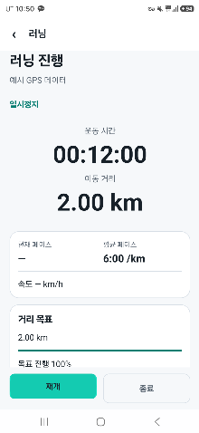

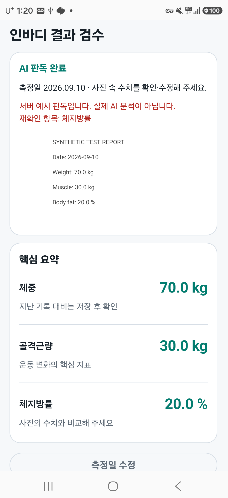

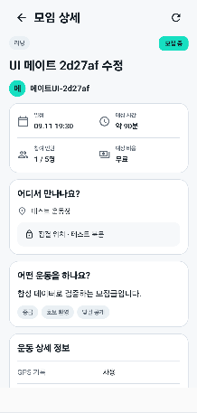

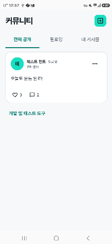
Threadia
협업 맥락과 플랫폼 운영 기능
Threadia
협업 맥락과 플랫폼 운영 기능
- 역할
- 팀장으로 일정과 작업을 관리하고, 감사 로그 및 회사 생명주기를 다루는 플랫폼 관리자 백엔드를 맡았습니다.
- 구현
- 팀은 이슈·쓰레드·문서를 연결하고, 프로젝트 경계를 벗어난 요청을 검증하는 접근 제어를 구현했습니다.
- 검증
- 프로젝트 README에 실 MySQL을 사용하는 PR 검증과 API 교차 검증 절차를 정리했습니다.
실제 실행 화면
로컬 프론트엔드·백엔드와 임시 MySQL을 연결했습니다. 계정·프로젝트·공고는 캡처용 합성 데이터입니다. 화면을 누르면 크게 볼 수 있습니다.


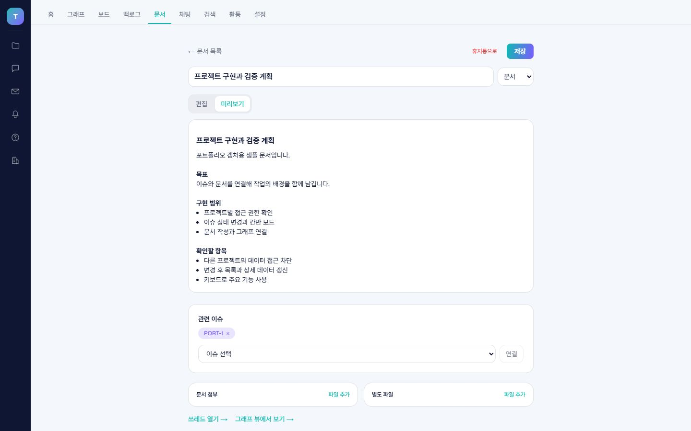

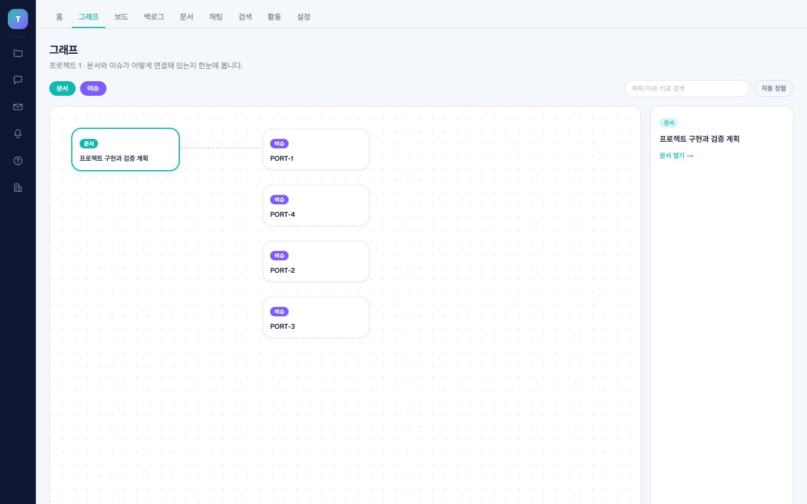
Together
학생과 교수의 협업을 프로젝트 단위로 관리
Together
학생과 교수의 협업을 프로젝트 단위로 관리
- 역할
- 회원 인증과 팀 권한, 회의·투표·공지 API, 교수 피드백의 읽음 상태와 이력 기능을 담당했습니다.
- 구현
- 프로젝트와 멤버 관계를 모델링하고 Google Drive 문서 관리와 Agora 화상회의 토큰 발급을 연결했습니다.
- 검증
- 발표 후 실행 설정과 예외 응답을 정리하고 백엔드 테스트 및 프론트엔드 프로덕션 빌드를 확인했습니다.
실제 화면
화면을 누르면 원본 크기로 볼 수 있습니다. 저장소의 화면 자료

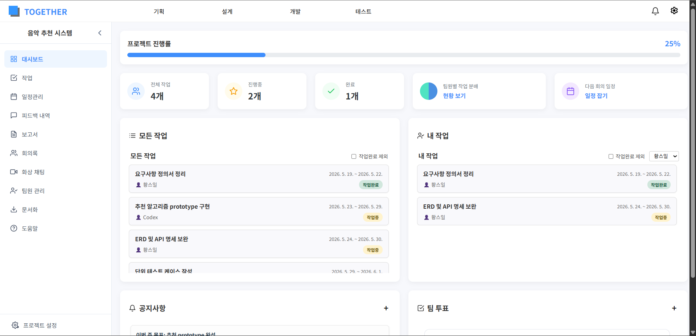


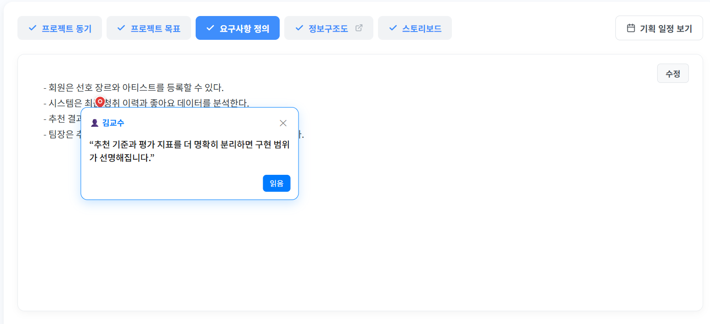
TimeTodo
기존 코드의 인증과 배포 준비 개선
TimeTodo
기존 코드의 인증과 배포 준비 개선
- 문제
- 기존 앱은 클라이언트의 사용자 ID를 신뢰했고, 스키마 변경을 Hibernate 자동 갱신에 맡겼습니다.
- 구현
- 서버 세션과 Spring Security로 인증하고, 수정·삭제 요청에서 데이터 소유권을 검증하도록 바꿨습니다. 스키마 변경은 Flyway로 관리했습니다.
- 검증
- 프로젝트 기록 기준 백엔드 테스트 30건과 프론트엔드 빌드가 통과했고, 기존 DB와 빈 DB의 마이그레이션을 확인했습니다.
실제 화면
화면을 누르면 원본 크기로 볼 수 있습니다. 저장소의 화면 자료


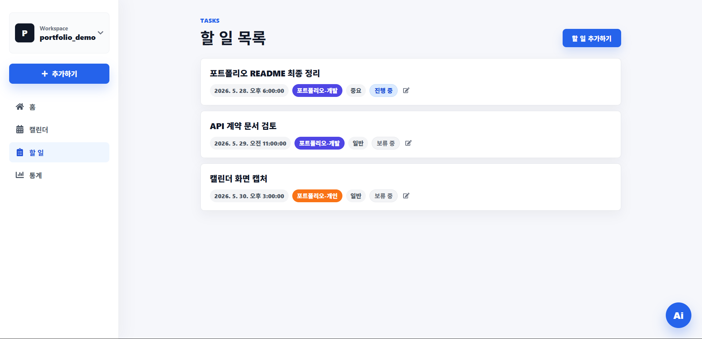

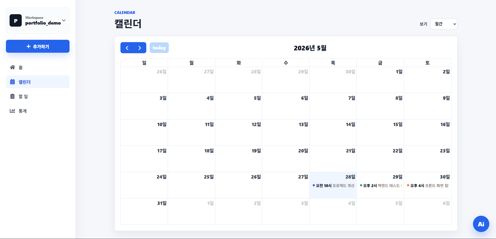
청약 따잇
Subscription-TTAIT · 공고 탐색부터 조건 확인과 신청 일정까지
청약 따잇
Subscription-TTAIT · 공고 탐색부터 조건 확인과 신청 일정까지
- 서비스
- 지역·주택 유형·가격으로 공고를 검색하고, 프로필 기반 추천과 조건 체크리스트를 제공합니다. 주변 시세 비교, 즐겨찾기 일정과 이메일 알림도 연결했습니다.
- 수집·검수
- 관리자가 선택한 LH 후보의 PDF를 Gemini로 파싱합니다. 공고 정보와 PDF URL의 fingerprint가 같으면 재파싱을 생략해 기존 결과를 유지합니다.
- 조회 개선
- 공고 전체를 메모리에 읽던 방식에서 DB 검색·정렬·페이지네이션으로 전환했습니다. 개인화 조건 판정은 evaluator로 분리하고 응답에 private, no-store를 적용합니다.
- 검증
- 저장소에 조건 체크리스트와 즐겨찾기 일정의 MySQL E2E 검증 기록을 남겼습니다.
실제 실행 화면
로컬 프론트엔드·백엔드와 임시 MySQL을 연결했습니다. 계정·프로젝트·공고는 캡처용 합성 데이터입니다. 화면을 누르면 크게 볼 수 있습니다.


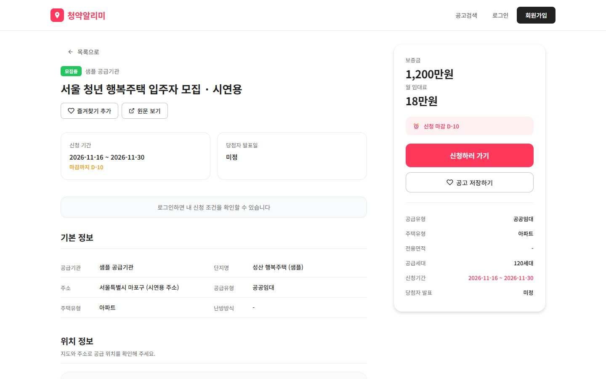
StudyLog
학습 기록을 위한 MVC2 웹 애플리케이션
StudyLog
학습 기록을 위한 MVC2 웹 애플리케이션
- 구현
- 게시글·태그·시리즈 기능을 Java Servlet과 JSP로 구성하고, Oracle DAO에서 검색과 페이지네이션을 처리했습니다.
- 구조
- 로그인과 관리자 접근을 필터로 나눴고 데이터 접근에는 JDBC와 PreparedStatement를 사용했습니다.
실제 화면
화면을 누르면 원본 크기로 볼 수 있습니다. 저장소의 발표 자료


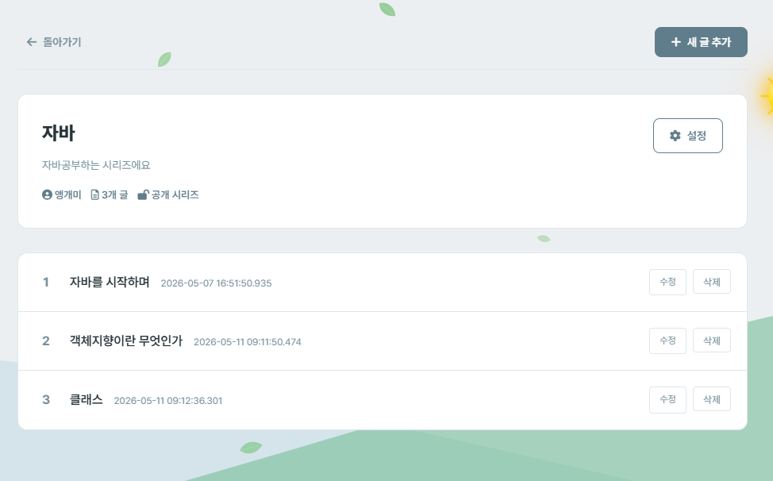

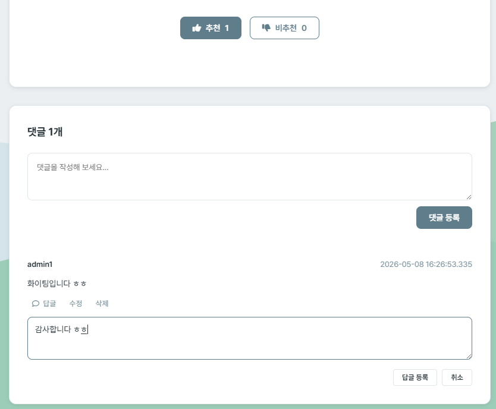